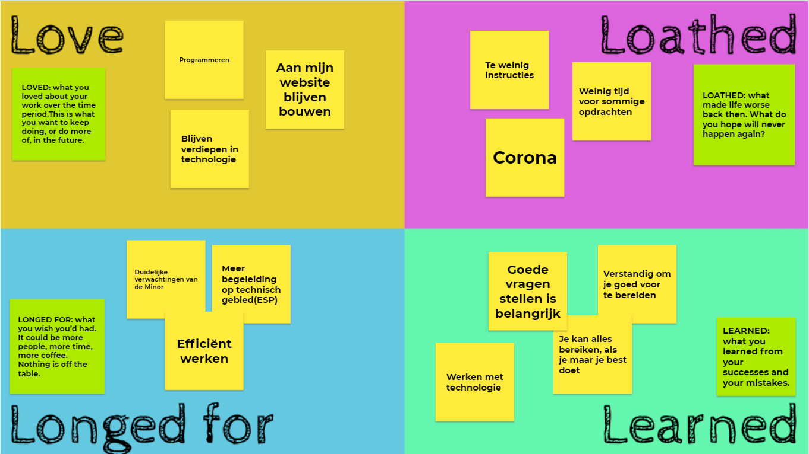

Eindreflectie
In dit hoofdstuk ga ik reflecteren hoe ik de minor vond dit doe ik aan de hand van de 4L: Love, Loathed, longed for en Learned.
De 4L
Love
Het leukste om te doen vond ik het programmeren van mijn website. Hier heb ik ook veel tijd in gestoken. Op dit moment heb ik mijn website als portfolio opgebouwd, maar ik ga hem misschien om bouwen zodat ik hem als CV kan gebruiken.
In de toekomst wil ik mij blijven verdiepen in technologie, door deze minor ben ik veel te weten gekomen en dit wil ik alleen maar blijven uitbreiden. Door deze minor heb ik al wel een goede basis gekregen.
Loathed
Tijdens de minor hadden we helaas te maken met corona. We moesten veel thuiswerken en dat is toch minder prettig werken voor mij. Het liefst had ik zoveel mogelijk op locatie gewerkt, dit maakt samenwerken makkelijker.
Voor sommige opdrachten die we in de eerste zes weken kregen, hadden we erg weinig tijd om ze te maken. Hierdoor had ik soms te weinig tijd om ze goed uit te werken. Ik had liever wat meer tijd tussen de opdrachten gehad.
Longed for
Het was aan het begin niet duidelijk voor mij waar ik naartoe aan het werken was bijvoorbeeld wat er allemaal precies in het portfolio moet staan. Ik had liever een duidelijk doel voor ogen gehad, nu was het niet altijd even duidelijk.
Ik had ook graag een betere uitleg gehad tijdens het programmeren van de ESP. Het werken met een handleiding vond ik niet fijn. Sommige dingen konden beter klassikaal uitgelegd worden, zodat je ook echt snapt wat een sensor precies doet. Uiteindelijk snap ik wel wat alles precies doet dit heeft mij wel wat tijd gekost.
Learned
Tijdens de minor heb ik veel technische kennis opgedaan. Dit is ook een van mijn persoonlijke doelen. Door de verschillende vakken heb ik uit verschillende richtingen naar technologie kunnen kijken.
Ik ben erachter te komen dat het belangrijk is om goede vragen op te stellen. Tijdens het project bij Flynth moest ik samen met Dirk en Marc verschillende personen interviewen. De interviews hadden we goed voorbereid waardoor we de juiste informatie hebben gekregen. Het interviewen van personen was nieuw voor mij.
Ik heb ook geleerd dat als je geen technische achtergrond hebt, je toch een technische minor kan volgen. Tijdens de minor heb ik natuurlijk niet de moeilijkste theorie gehad, maar ik ben toch trots op mijzelf dat ik deze minor ben gaan volgen. Ik was aan het begin best nerveus voor deze minor, omdat ik bang was dat de stof te moeilijk zou zijn. Uiteindelijk is het best wel meegevallen. Ik mag soms best wel wat zelfverzekerder zijn op dit gebied.
